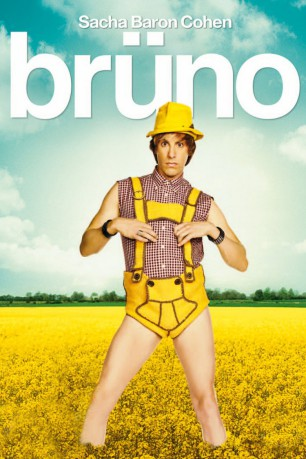

#1597 Brüno
 
 IMDB-Wertung: 5.8 / 10
IMDB-Wertung: 5.8 / 10  Metascore: 54
Metascore: 54 
Nach feistem “Ali G” und dreistem “Borat” schickt der britische Starkomiker Sacha Baron Cohen nun den nächsten Unruhestifter in den Ring – in Netzhemd und Hotpants. Brüno – teils Model, teils Celebrity-Reporter und vollständig schwul �� macht sich aus Österreich auf, die Vereinigten Staaten und damit auch die Welt zu erobern. Auf seiner internationalen Tour der Provokationen schreckt Brüno vor nichts und niemandem zurück, um sich ins Rampenlicht zu drängeln. Ob mit einem Guerilla-Auftritt im Klettkostüm bei einer Modenschau in Mailand, ob mit kruden Auftritten und Reality-Reportagen oder eben mit seinem schwarzen Adoptivbaby, das man als angesagter Star einfach dabeihaben muss. Mit hartgesottener Arglosigkeit sucht Brüno ungeniert nach Spaß und sorgt für Aufruhr, wo auch immer er hinkommt.
Jahr: 2009
Dauer: 81 Minuten
FSK: 16
Land: USA Studio: Universal PicturesTonspuren:
Untertitel: Deutsch,
Auflösung: 1080p (1920x1040) Größe: 8243 MB
Genre: Komödie
Regisseur: Larry Charles
Drehbuch: Sacha Baron Cohen, Anthony Hines, Dan Mazer, Jeff Schaffer, Sacha Baron Cohen
Soundtrack: Erran Baron Cohen
Darsteller:
 Sacha Baron Cohen als Brüno
Sacha Baron Cohen als Brüno Gustaf Hammarsten als Lutz
Gustaf Hammarsten als Lutz- Clifford Bañagale als Diesel
- Josh Meyers als Kookus
 Toby Holguin als Mexican Gardener #1
Toby Holguin als Mexican Gardener #1 Thomas Rosales Jr. als Mexican Gardener #4
Thomas Rosales Jr. als Mexican Gardener #4- Bono als Himself - 'Dove of Peace'
- Chris Martin als Himself - 'Dove of Peace'
 Elton John als Himself - 'Dove of Peace'
Elton John als Himself - 'Dove of Peace'- Slash als Himself - 'Dove of Peace'
 Snoop Dogg als Himself - 'Dove of Peace'
Snoop Dogg als Himself - 'Dove of Peace' Sting als Himself - 'Dove of Peace'
Sting als Himself - 'Dove of Peace'- Lloyd Robinson als Himself - Suite A Management Agent
- Paula Abdul als Herself - American Idol Judge
- Brittny Gastineau als Herself - Former Reality Show Star
- Domiziano Arcangeli als Fashion Show Director in Milan , uncredited
- Jeff Ballard als Publicist , uncredited
 Emerson Brooks als NBC Reporter , uncredited
Emerson Brooks als NBC Reporter , uncredited Harrison Ford als Himself , uncredited
Harrison Ford als Himself , uncredited David Hill als Reporter , uncredited
David Hill als Reporter , uncredited- Hugh B. Holub als Focus Group Curmudgeon , uncredited
- Todd Christian Hunter als Man in Hotel Room , uncredited
 Paul McCartney als Himself , uncredited
Paul McCartney als Himself , uncredited- Fabrice Morvan als Himself , archive footage, uncredited
- Frank Piciullo als Himself - Backstage Guy on Phone , uncredited
 Miguel Sandoval als Himself / D.A. Manuel Devalos , uncredited
Miguel Sandoval als Himself / D.A. Manuel Devalos , uncredited- Sandra Seeling als Inga , uncredited
- Stephen Cyrus Sepher als Photographer , uncredited
 Alexander von Roon als German Reporter , uncredited
Alexander von Roon als German Reporter , uncredited- Gabby West als German , uncredited
- Chibundu Orukwowu als O.J.
- Chigozie Orukwowu als O.J.
- Robert Huerta als Mexican Gardener #2
- Gilbert Rosales als Mexican Gardener #3
- Marco Xavier als Mexican Gardener #5
- Kunal Nayyer als Himself - Designer
- Heather Hahn als Herself - Supermodel
- Filipa Bleck als Herself - Booker, Elite Models
- Denny Bond als Himself - Network Producer, CBS
- Ron Paul als Himself - 2008 Presidential Candidate
- Gary Williams als Himself - Psychic
- Nicole DeFosset als Herself - Charity PR Consultant
- Suzanne DeFosset als Herself - Charity PR Consultant
- Yossi Alpher als Himself - Ex-Mossad Chief
- Gassin Khatib als Himself - Fmr. Palestinian Minister
- Avraham Sela als Himself - Prof. Hebrew Univ.
- Adnan Al-Husseini als Himself - Palestinian Governor, Jerusalem
- Ayman Abu Aita als Himself - Terrorist Group Leader, Al-Aqsa Martyrs Brigade
- Richard Bey als Himself - Talkshow Host
- Jody Trautwein als Himself - Gay Converter
Datei: X:\2009(A-F)\Brüno (2009, FSK16, 1920x1040).mkv seit 24.07.2015
Festplatte: HD 2008(G-Z)-2009(A-F)
 Es gibt insgesamt 91 Filme in der Gruppe '2009(A-F)'
Es gibt insgesamt 91 Filme in der Gruppe '2009(A-F)'